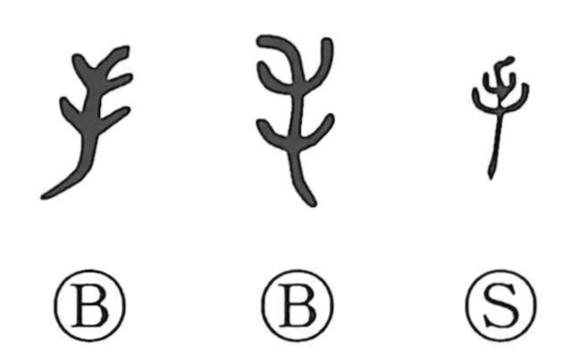

手

Kun: te, ta | On: shu, zu
hand ・ skill ・ method
Explanation
手 pictures an open hand, with five fingers spreading from the wrist. The word may originally have named the wrist itself, before becoming the general word for the hand. The old forms make the spread fingers clear.
The hand naturally gives actions such as holding, taking, and doing something oneself. From what the hand performs, 手 also means a skill, an act, or help given to someone. It can then name the person who performs a particular action or possesses a particular skill.